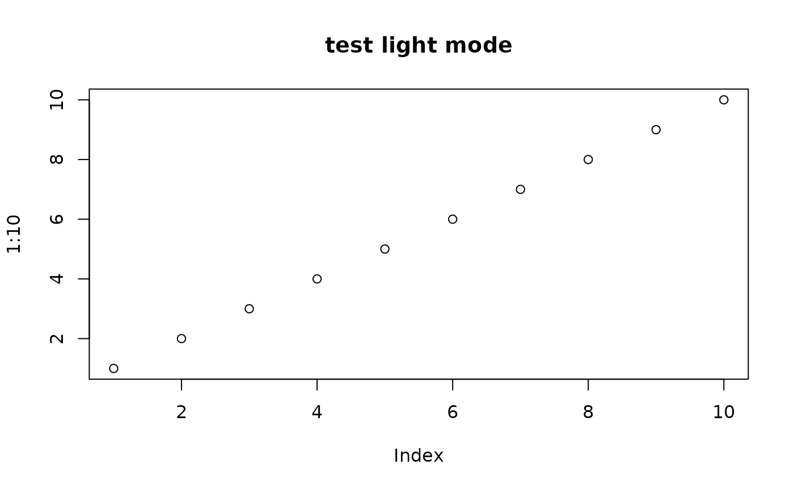
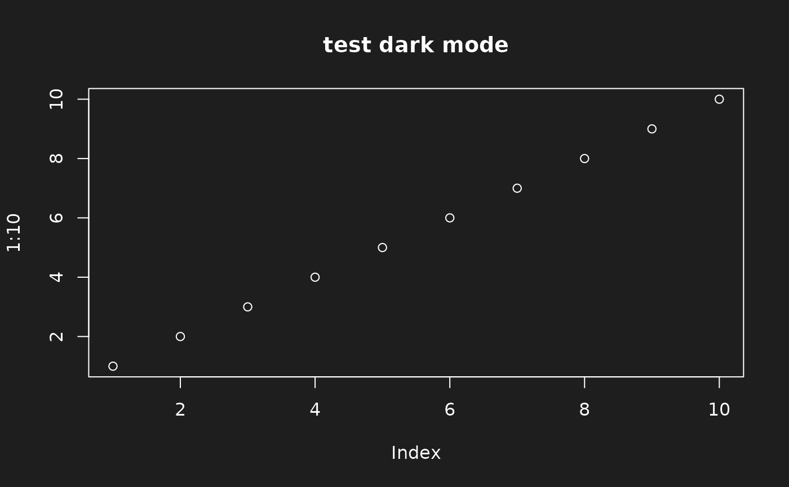

Set and Return RAVE theme
Usage
set_rave_theme(
theme,
.set_default = FALSE,
session = shiny::getDefaultReactiveDomain()
)Details
RAVE support two themes: "light" mode and "dark" mode. In "light" mode, the web application background will be light gray and white. In "dark" mode, the application background will be gray and foreground will be white.
If theme is missing and RAVE is running as web application, then
it is set from current session, otherwise, the default theme is retrieved
from rave_options('default_theme'). If option "default_theme"
is missing, then it defaults to "light".
Examples
# Retrieve current theme
get_val(rave_options('default_theme'), default = 'light')
#> [1] "light"
# Set light mode
set_rave_theme('light')
#> [1] "light"
plot(1:10, main = 'test light mode')

# Set dark mode
set_rave_theme('dark')
#> [1] "dark"
plot(1:10, main = 'test dark mode')
